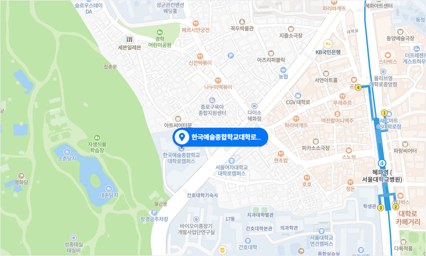

주소 및 연락처
- 주 소
- 서울특별시 종로구 와룡동 2-70 (대학로) (도로명 주소 : 서울특별시 종로구 창경궁로 215)
- 전 화
- 02-746-9537
- 팩 스
- 02-746-9598
대중교통
- 지 하 철
- 4호선 혜회역 4번출구 (도보 10~15분, 택시 기본요금)
- 시내버스
-
간선100, 102, 104, 106 ,107, 108, 140, 143, 150, 151, 162, 171, 172, 272, 301, 601, 710마을종로 07, 종로 12공항6011